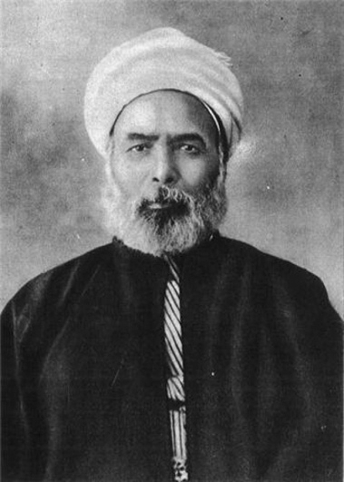

Muhammad Abduh
Muhammad bin Abduh bin Hasan Khairullah, biasa dikenal sebagai Muhammad Abduh adalah seorang pemikir muslim dari Mesir dan salah satu penggagas gerakan modernisme islam.
Ia lahir pada tahun 1849 M dari keluarga petani di desa Mahallat Nasr, Delta Nil, Mesir hilir dan wafat pada 11 Juli 1905 di Iskandariyah.
Muhammad Abduh adalah murid setia Jamaluddin al-Afghani dan menjadi penerus perjuangannya dalam mengobarkan semangat pembaruan pemikiran Islam. Abduh adalah seorang moderat dan lebih banyak memusatkan perhatian pada bidang pendidikan dan pendekatan kultural ketimbang kegiatan politis.